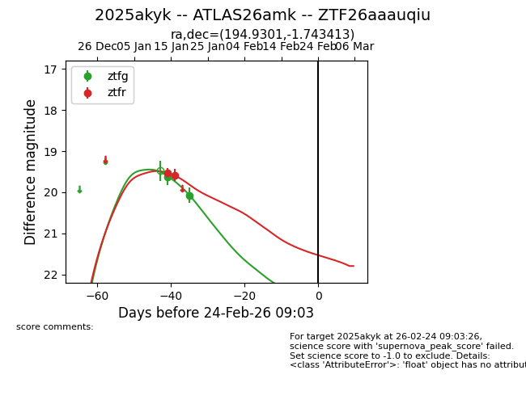
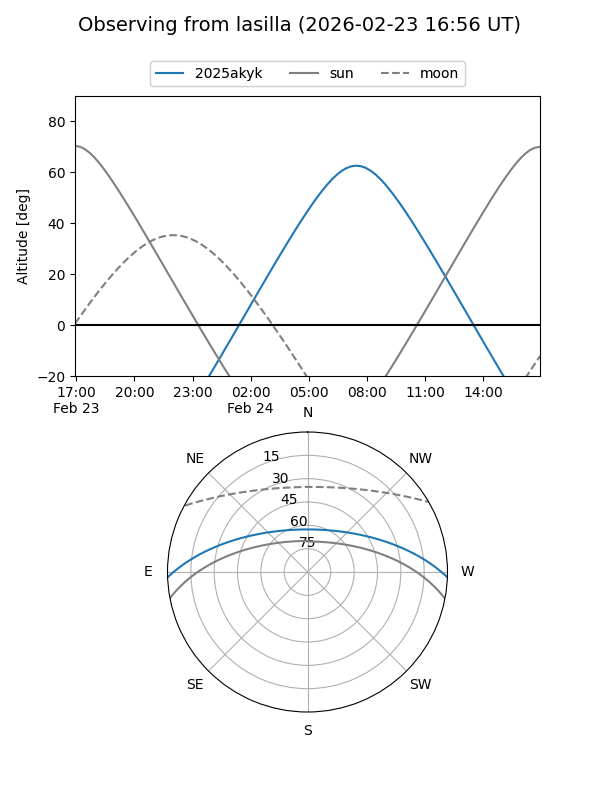
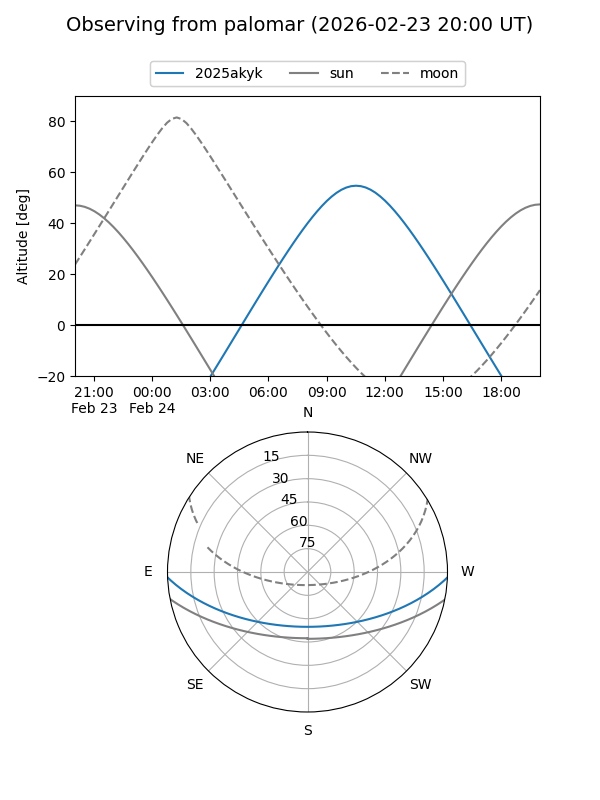
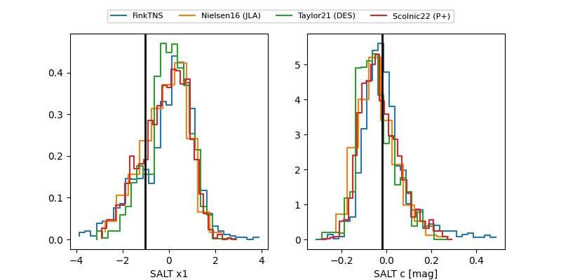

2025akyk
Target 2025akyk at 2026-01-15 15:50
Aliases and brokers:
FINK: link
Lasair: link
ALeRCE: link
TNS: link
YSE: link
alt names
ZTF26aaauqiu (ztf,fink_ztf)
2025akyk (tns,yse)
ATLAS26amk (atlas)
Coordinates:
equatorial (ra, dec) = 194.9301,-1.74341
equatorial (HMS+DMS) = 12:59:43.21,-01:44:36.29
galactic (l, b) = (307.2119,+61.05949)
Flags:
Photometry:
last ztfg=19.63, ztfr=19.54
1 ztfg, 1 ztfr detections
Lightcurve

Visibility


Additional plots
